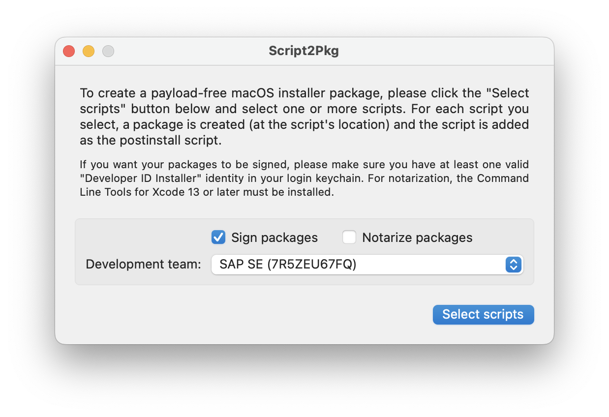
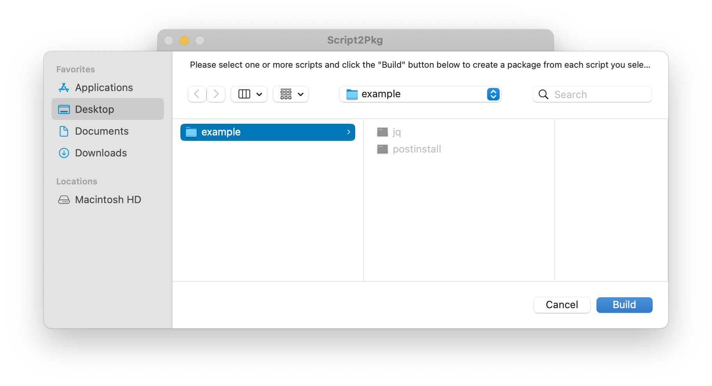
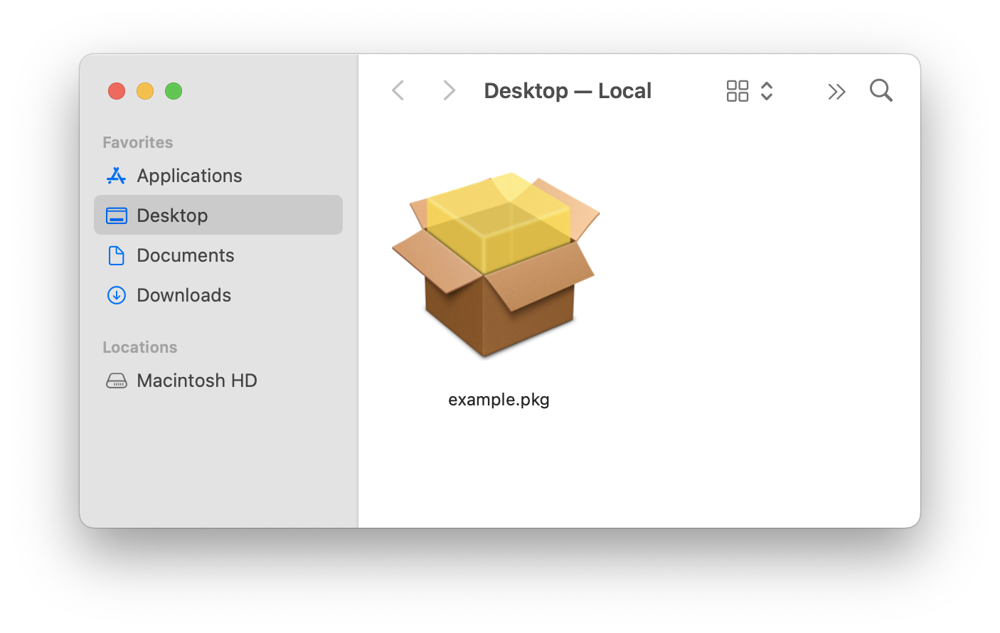

Script2Pkg
Script2Pkg
Script2Pkg
Creating folder-based packages
You may need to create an installer package where you need to provide additional resources to the script you're trying to package into an installer package. These resources may be an additional script, an application binary, or even another installer package. This tool provides an option for doing so, with the following requirements:
You must create a folder. Inside the folder, you must have at least one script named exactly as follows:
preinstall
postinstall
These scripts must also be set as executable files . The reason is that two categories of scripts have been defined for use with installer packages:
preinstall : The preinstall script is run before files are being installed. If the script does not return an exit status of zero, Installer will cancel the installation.
postinstall : The postinstall script is run after files have been installed. If the script does not return an exit status of zero, Installer will declare the installation failed.
The names of the scripts must also be exactly as described, as the Installer application can only use executable files with those names as scripts which can run pre-installation and post-installation actions. If the file names are different, Installer will not recognize or use them.
Once you have all items available, please use the procedure to create the package:
1. Launch the app.

2. If you want to sign the installer package you're creating, make sure at least the Sign packages option is selected. Also select the Notarize packages option if you want the package to be notarized.

3. Click the Select scripts button.
4. In the window which appears, select the folder containing your components and click the Build button. In this example also the jq binary is included besides the postinstall script, so the postinstall script can run jq right from within the package without installing it.

5. The installer package will be created and stored in the same location as the folder which was selected. The installer package will have the same name as the source folder.
